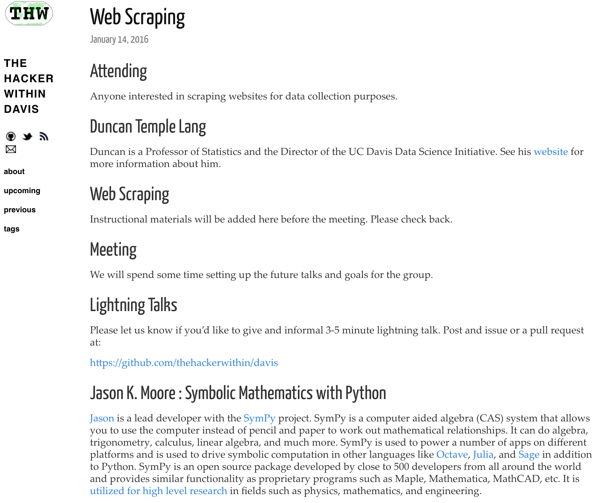
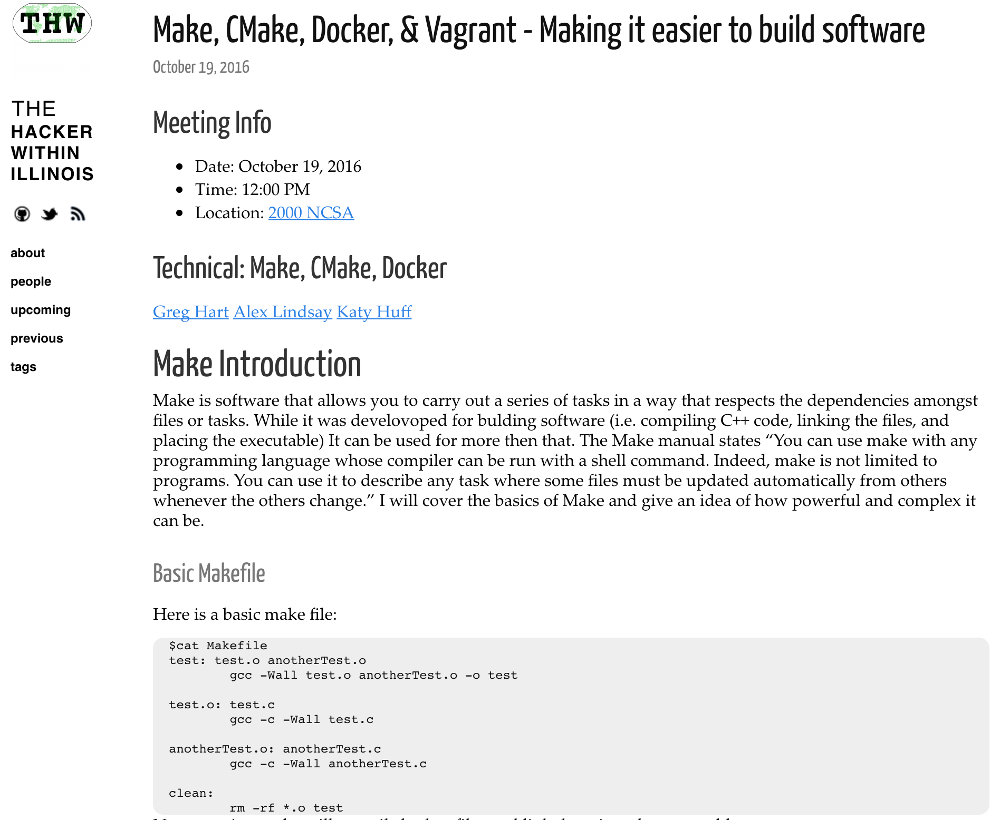
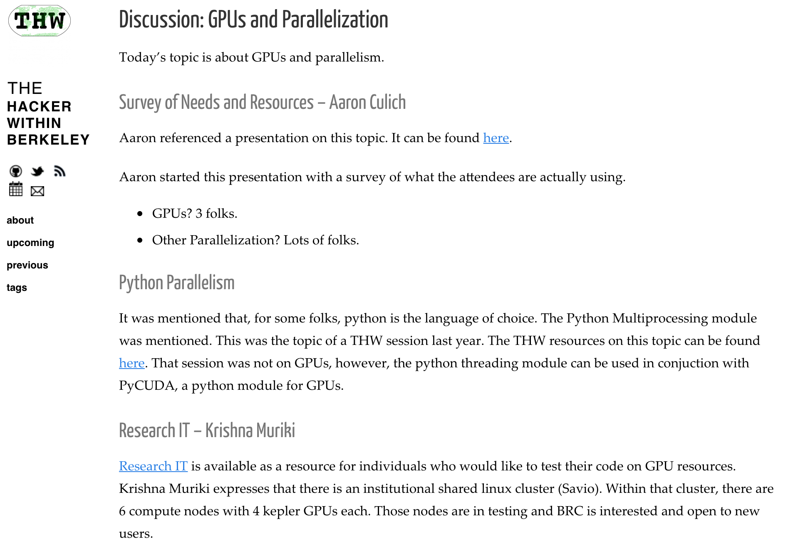
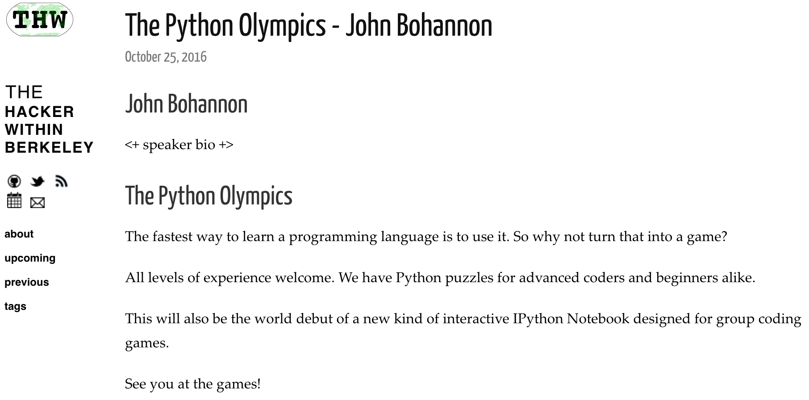
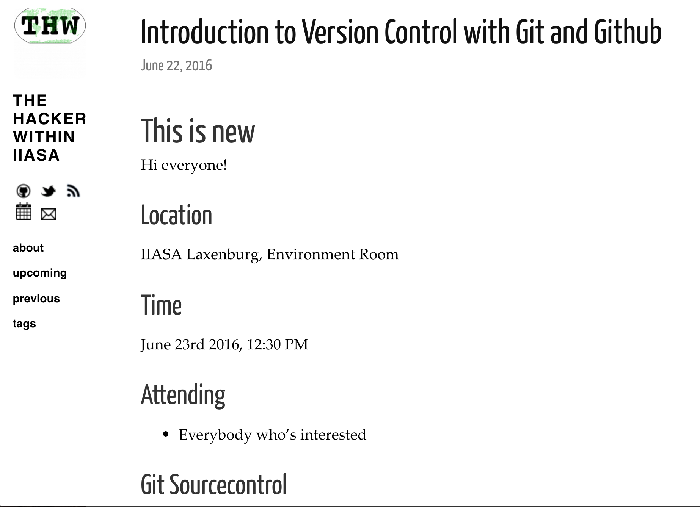
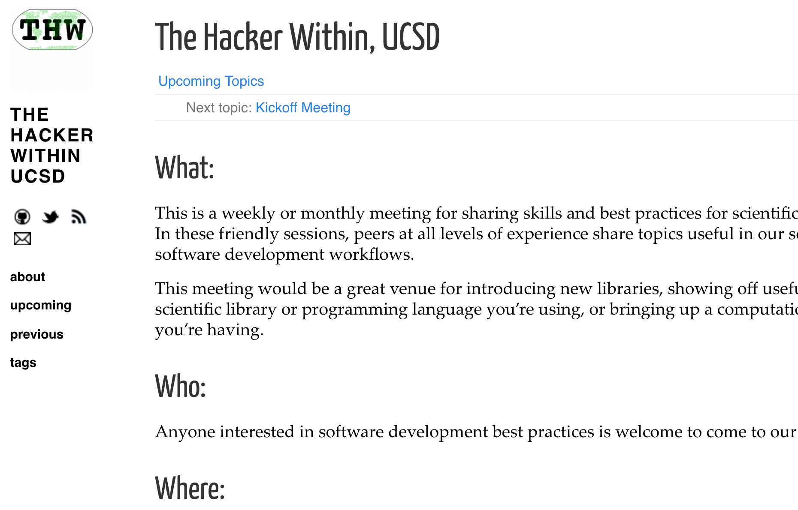

name: inverse layout: true class: center, middle, inverse --- # The Hacker Within # UC San Diego Chapter .footnote[Research Developer Roadshow ] --- layout: false # What is The Hacker Within * Meeting of scientists/researchers who are always learning new **tips and tricks** to make their computational work flow more smoothly * Peers at all **levels of experience** share topics useful in our scientific software development workflows * Great venue for introducing **new libraries**, showing off **useful features** of a tool you are using, or bringing up a **problem** you’re having * Organized as Chapters by University/Research Organization * Current chapters: University of Illinois at Urbana–Champaign, UC Berkeley, UC Davis, Swinburne (Austrailia), International Institute for Applied Systems Analysis (IIASA) Austria --- # Example Topics from Other Chapters ??? * Discussing computational problems with a project * Useful features or tips-and-tricks of a programming language used in a project * Demonstrating and discussing a project or technology * Python, Machine Learning, RStudio, Bash, Visualizations, HPC, Git --- <img src="images/davis_relationaldb.png" alt="SQL" style="width: 800px;"/> .center[<http://www.thehackerwithin.org/davis/posts/sql>] ---  --- .center[<http://www.thehackerwithin.org/illinois/posts/make-build-sys-f16>]  ---  .center[<http://www.thehackerwithin.org/berkeley/posts/gpus-parallelization-fall-2015>] ---  .center[<http://www.thehackerwithin.org/berkeley/posts/python-olympics>] ---  .center[<http://www.thehackerwithin.org/iiasa/posts/git-introduction>] --- layout: false .left-column[ ## How it works: ] .right-column[ 1. First meeting of the quarter is used to generate topics and schedule talks * E.g. What do you want to learn? What would you like to teach? 2. For main meetings, we gather and go through a round of introductions 3. A volunteer will give a tutorial or lead a discussion about a computational topic for about 40-45 minutes 4. There will be a time for a couple of Lightning Talks, which are 5-10 minute blasts of information about a particular topic or question of interest to the group ] --- .left-column[ ##How it is organized: ] .right-column[ * Use a Hacker Within GitHub repository to schedule event * It's encouraged to provide code from events in notebooks like Jupyter or Rmarkdown (when possible) * **Less is more** moto - talks are only 40-45 minutes ] --- .left-column[ ## Who is this for? ] .right-column[ * Anyone interested in **software development best practices** * Anyone who wants to share a tip or trick, a new library, show off useful features of a scientific library or programming language, or bringing up a computational problem * Anyone who wants to learn about the above ] --- ## Coming in Winter 2017!  --- ## How to get involved 1. Come to the kick-off meeting on 2017-01-19 @4pm (Location TBD) 2. Sign up for mailing list <http://lib.ucsd.edu/thw> 3. If you are interested in giving a talk, helping host or organize, email <data-consult@ucsd.edu> 4. Look for a survey on our webpage about possible topics and interested volunteers <http://www.thehackerwithin.org/ucsd> --- class: middle, center The Hacker Within isn't a class and no one is required to attend. We show up to have fun and to learn. Hopefully, your tutorial will teach something useful in a way that is enjoyable. To do this, please consider bringing your A-game. That is, find the enthusiastic tinkering problem-solver inside yourself (The Hacker Within yourself) and bring that version of yourself to share that enthusiasm with us. Enthusiasm is infectious! - https://github.com/thehackerwithin/berkeley